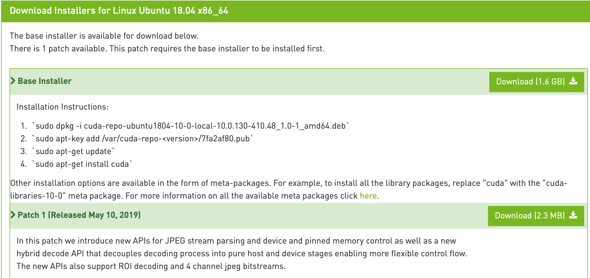

簡介
環境準備
- 安裝 Ubuntu 作業系統
- 安裝 Python 3.7
- 安裝 Anacoda for Python 3.7
- 下載 CUDA https://developer.nvidia.com/cuda-10.0-download-archive?target_os=Linux&target_arch=x86_64&target_distro=Ubuntu&target_version=1804&target_type=deblocal
- Installation Instructions:
sudo dpkg -i cuda-repo-ubuntu1804-10-0-local-10.0.130-410.48_1.0-1_amd64.deb sudo apt-key add /var/cuda-repo-<version>/7fa2af80.pub sudo apt-get update sudo apt-get install cuda